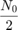
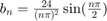
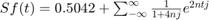

Contents
Objetivos
- Realizar gráficas de series de Fourier exponenciales y trigonométricas en tiempo continuo
- Manipulación de instrucciones en MATLAB
- Calculo númerico de los coeficientes de Fourier
Introducción
Cálculo Numérico de
Podemos calcular los coeficientes utilizando la DFT (Transformada en Tiempo Discreto de Fourier), la cual utiliza valores de una señal periódica en un periodo. El intervalo de muestra es segundos. Por ende, no hay un número de valores en un periodo . Para encontrar la relación entre y los valores de , considérese lo siguiente:
(a)
Donde  es el -ésimo valor de y
es el -ésimo valor de y
(b)
En la práctica, es imposible hacer que al calcular el lado derecho de la integral de la ecuación (a). Se puede hacer una pequeña, aproximarla, pero no hacerla 0, lo cual causará que los valores se incrementen sin límite. Entonces, se puede ignorar este límite en en la ecuación (a) con el entendimiento implícito de que es razonablemente pequeño. Cualquier valor no igual a cero de causará un error de cálculo, el cual es inevitable en cualquier evaluación numérica de la integral. El error resultante del valor no igual a cero se llama error de interferencia.
(c)
Ahora, de la ecuación (b), . Por ende, , y por la ecuación (c), se determina que
(d)
La propiedad de periodicidad, , establece que más allá de , los coeficientes representan valores para negativas. Por ejemplo, cuando . El ciclo se repite de nuevo desde en adelante.
Una vez establecido lo anterior, se procederá a utilizar el algoritmo de la Transformada Rápida de Fourier.
Ejemplo C6.4 Realizar el cálculo y graficar los espectros trigonométricos y exponenciales de Fourier para la señal periódica en la figura 1).
Figura 1):
Los valores de comienzan en y el último -ésimo valor está en . En los puntos de discontinuidades, el valor de la señal es el promedio de los valores de la función en ambos lados de la discontinuidad. Por ello, el valor de la señal en no es , sino .
Para determinar el valor , se requiere que para sea omisible. Debido a que tiene una discontinuidad de salto, decrece lentamente tal como . Por consiguiente, escoger es aceptable porque el cien  ésimo armónico es aproximadamente del fundamental. Sin embargo, también se requiere con potencia . Por ello, se toma .
Primero, se establecen los parámetros básicos:
T_0=pi; N_0=256; T=T_0/N_0; t=(0:T:T*(N_0-1))'; M=10; x=exp(-t/2); x(1)=(exp(-pi/2)+1)/2;
Después, la Transformada en Tiempo Discreto de Fourier se calcula en términos de la función , se usa para aproximar el espectro exponencial de Fourier comprendido entre
D_n = fft (x)/N_0; n = [-N_0/2:N_0/2-1]'; clf; subplot (2, 2, 1); stem(n, abs(fftshift (D_n)),'k'); axis ([-M M -.1 .6]); xlabel('n'); ylabel('|D_n|'); subplot (2, 2, 2); stem(n, angle(fftshift(D_n)),'k'); axis([-M M -pi pi]); xlabel ('n'); ylabel('\angle D n [rad]'); % *El espectro de Fourier aproximado en el intervalo $$0\leq n \leq M$ sigue a continuación.* n = [0:M]; C_n(1) = abs(D_n(1)); C_n(2:M+1) = 2*abs (D_n(2:M+1)); theta_n(1) = angle(D_n(1)); theta_n(2:M+1) = angle(D_n(2:M+1)); subplot (2, 2, 3); stem(n,C_n,'k'); xlabel ('n'); ylabel('C_n'); subplot (2, 2, 4); stem(n,theta_n,'k'); xlabel ('n'); ylabel('\theta n [rad]');
Desarrollo
Se plantea la solución a siete problemas, donde cada uno requiere del uso de Matlab como herramienta de cálculo y análisis.
Para cada problema debes de realizar
- Realizar el programa de la serie que se indica
- Gráfica de la serie de Fourier en un intervalo que muestre 5 repeticiones
- Gráfica de la señal y la serie de Fourier para 4 armonicos
- Gráfica del error
- Gráfica de la energía del error
- Espectro de magnitud para 4 armonicos
- Espectro de fase para 4 armonicos
- Todo lo anterior para 15 armonicos
Ejemplo 6.1
Con serie y espectro trigonometrico, no es necesario entregar el código, solo la aplicación al problema especifico, debe de indicar la función y los valores de sus coeficientes (sin incluir el procedimiento)
- Función:

- ;

![$Sf(t)=0.504+[1+\sum_{n=1}^{\infty}\frac{2}{1+16n^2}(\cos(2nt)+4n\sin(2nt))]$](ASySPrac05CarlosMartinez_eq06349420774633397513.png)
4 ARMONICOS

15 ARMONICOS

Ejemplo 6.2
Con serie y espectro exponencial y A=3, no es necesario entregar el código, solo la aplicación al problema especifico, debe de indicar la función y los valores de sus coeficientes (sin incluir el procedimiento).
- Función

- ;

- 
4 ARMONICOS

15 ARMONICOS

Ejemplo 6.4
Con serie y espectro exponencial, no es necesario entregar el código, solo la aplicación al problema especifico, debe de indicar la función y los valores de sus coeficientes (sin incluir el procedimiento)
- Función:
 ;
; 

Ejemplo 6.5
Con serie y espectro exponencial, no es necesario entregar el código, solo la aplicación al problema especifico, debe de indicar la función y los valores de sus coeficientes (sin incluir el procedimiento)
- Función:
- ;
- 
4 ARMONICOS

15 ARMONICOS

Ejemplo 6.7
Con serie y espectro exponencial y sin incluir la gráfica de f, error ni energía del error, no es necesario entregar el código solo la aplicación al problema especifico,debe de indicar la función y los valores de sus coeficientes (sin incluir el procedimiento)
- Función:
- ;
4 ARMONICOS

15 ARMONICOS

Como se puede observar las fraficas son muy similares
Apendice A
Puede consultar los codigos de programación de cada uno de los ejercicios en la siguiente carpeta
Referencias
- Lathi, B. (2005). Linear Systems and Signals. E.U.A.: Oxford University Press
- Moore, H. (2009). MATLAB for Engineers. E.U.A.: Prentice Hall.
- Ashok Ambardar. (1999). Analog and Digital Signal Processing. México D. F., México: BROOKS/COLE PUBLISHING COMPANY.
- Hwei P. Hsu. (2013). Señales y Sistemas. México D. F., México: McGrawHill.